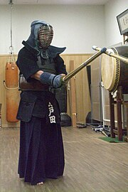
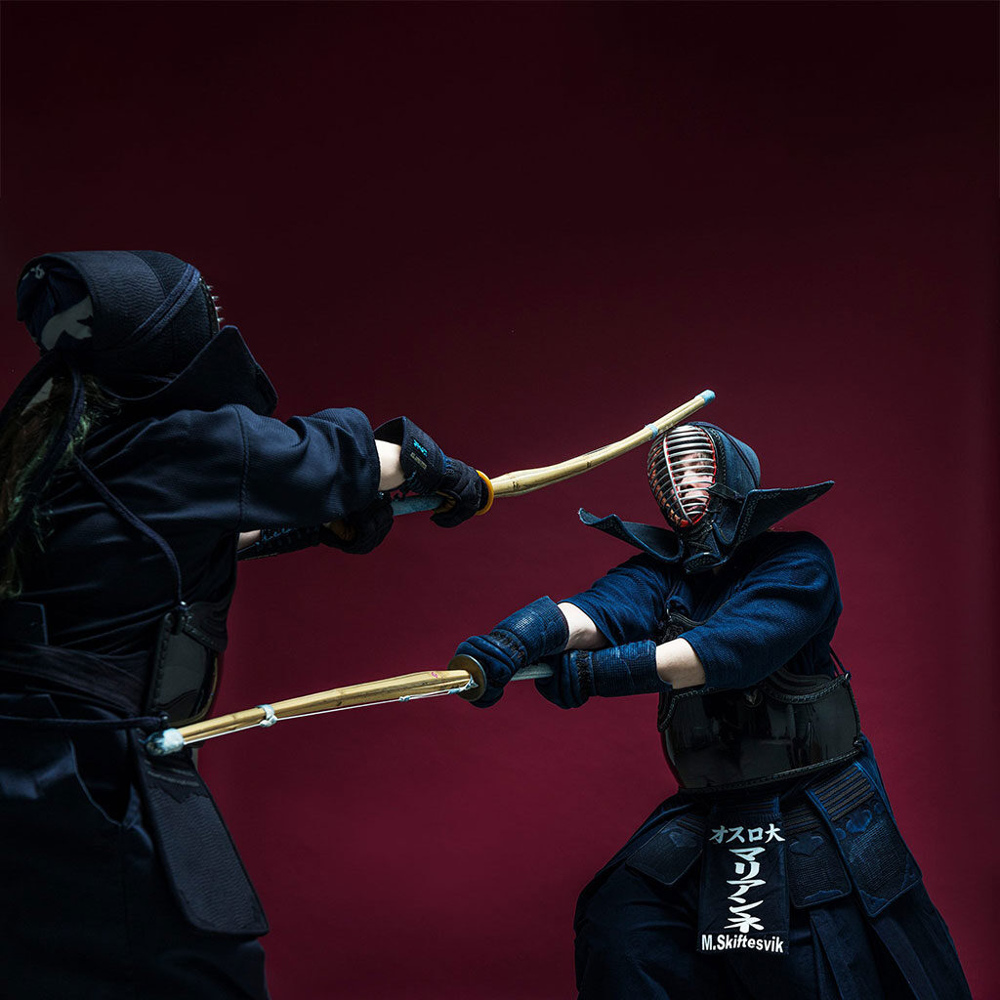
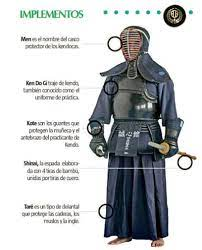
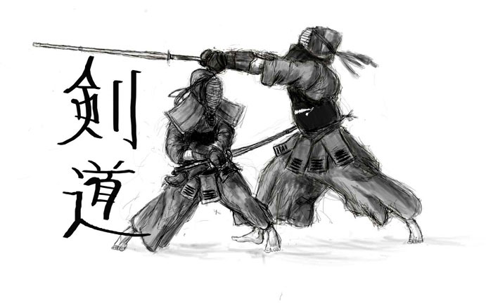
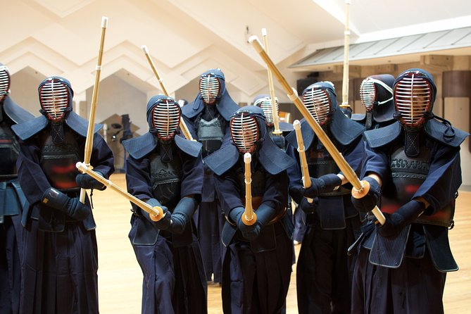

También llamado esgrima japonesa, esta arte marcial procedente del
país nipón se caracteriza por especializarse en la lucha con espadas de bambú.
En este arte marcial ambos contendientes deben cubiertos por una armadura,
y parte de una conceptualización del combate y de una filosofía semejante a
la de los antiguos samurais. Solo se permite el ataca al antebrazo, el tronco,
la cabeza y la garganta.
Se practica la disciplina y el autocontrol, y pretende fomentar la capacidad de
hacer frente a las adversidades.
¿Que es el kendo?

es un gendai budō, o arte marcial japonés moderno formativo que destaca
por el uso y manejo del sable de bambú o shinai. El nombre significa 'camino del sable'
y proviene de los ideogramas 剣 (ken, 'sable', 'espada') y 道 (dō, 'camino', 'sendero', 'vía').
El Kendō es un arte marcial que hizo que la esgrima japonesa fuera competitiva según lo definido
por la Federación japonesa de Kendo.2 "Kendō " se refiere al camino que siguen los samuráis
japoneses para dominar las leyes de las espadas a través de batallas usando espada japonesa
(日本刀 Nihontō?), y aprender kendo significa aprender las leyes de la espada
Kata

Es importante notar que en algunas ocasiones como en exhibiciones, las kata se ejecutan
con el sable japonés real o (katana), y que además el kendo, es el arte marcial y deporte
de combate que más ha influido junto con el judo; al desarrollo metodológico, pedagógico y,
en la terminología, de las artes marciales japonesas modernas desarrolladas en el siglo xx
o gendai budō como el karate, y el aikidō; debido a que varios de los maestros fundadores
y/o difusores de estas disciplinas en Japón y en occidente, lo practicaron como parte de su
formación marcial.
Concepto
El Kendo es el camino de la formación humana a través de la disciplina y el
perfeccionamiento de los principios del manejo de la katana (espada).

Propósito

actitud de la práctica del Kendo
Estudiar el Kendo de manera correcta y seria,
Cultivar mente y cuerpo, fortalecer el espíritu enérgico,
Buscar la etiqueta a través de las características del Kendo,
Valorar la lealtad y la sinceridad,
Siempre esforzarse en la mejora personal,
Amar a la nación y a la sociedad,
Contribuir al amplio bienestar y la paz de la humanidad.
Establecido el 20 de marzo de 1975.
Federación Japonesa de Kendo